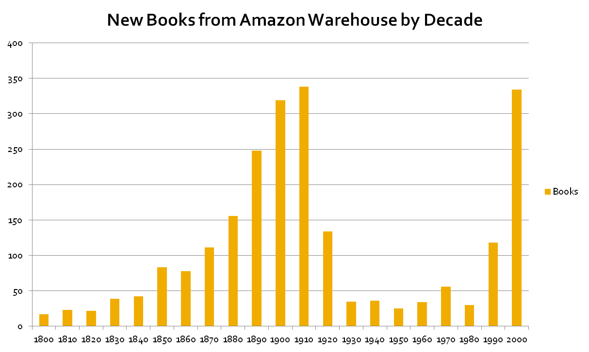

The reason that you can't get many books back to the 1920s and then suddenly can? Copyright. Someone owns the copyright in the US if the book came out after 1923.Economics 101 teaches that the existence of the property right should enhance the availability of books. After all, there's some money to be made - if not very much - so the IP owners would be out there circulating the material and picking up some pennies here and there. But it doesn't happen. The books disappear into the valley of death - or more precisely, the valley of slumber.
It shows how dramatically dysfunctional long copyright terms are, how increasingly dysfunctional they are in the age of the internet - the age of the long tail, and how much we could benefit from improving our arrangements here. The move from regarding copyright and patents as 'monopoly privilege' to considering them 'intellectual property' was a disastrous one rhetorically speaking. We need the institution of private property in physical things owing to their rivalrous nature. One can argue that giving someone a monopoly interest in their creation has net benefits in certain circumstances, but the arguments are much more context specific.
Alas, once we started calling it 'intellectual property' there was a kind of gravitational pull of the idea that stronger is better. We're slowly having to unlearn that idea. In a lot of areas - software and business methods patents, term length, particularly retroactively imposed, DCMA and SOPA type regulation - stronger is a lot worse.
Intriguingly however, we have got the worst of both worlds.
Because the world of real property is much older and much more concrete than the world of 'intellectual' property, it has sorted out a lot of commonsensical things that remain to be sorted in IP. Thus for instance, the institutions of real property have understood that land has multiple uses and that the law must facilitate this. Thus we have easements, mineral rights below the ground, airspace rights above and native title rights coexisting with the title and right to quiet possession being owned by someone else. And we have the law of adverse possession. If we had something like that in IP we could make serious inroads into the valley of slumber at absolutely minimal costs to anyone.
If you don't assert your rights to real property for 21 years you lose the property under the rule of 'adverse possession'. Not so IP. I once attended a copyright conference where about two hours was devoted to problems like the 'orphan works' problem. Orphan works are works where the IP rights holder cannot be found. You'd think that wouldn't be a problem. Especially given today's IT possibilities, the ease with which one can make oneself findable on Google it's ridiculous that we don't have a policy that if you haven't made yourself reasonably discoverable as the copyright owner, you forfeit any rights you have against someone wishing to use your material.
Just as a matter of idle interest, title to land by adverse possession is not possible in NT or ACT, is possible in NSW effectively only for non-Torrens system land, and is very difficult in SA and Tasmania unless the registered proprietor consents. It's a bit easier in Victoria, WA and Queensland. See this article for more detail. There's a more detailed (but password-protected) article by my CDU colleague Les McCrimmon which I can send if anyone is interested. Of course none of this invalidates or undermines Nicholas's central point.
I thought it was gone here in Qld Ken, spose I should check. On the main point, I'm less concerned about copyright than patents, because copying of practical inventions is not quite the same thing (to me) as copying artistic work, but I agree the point completely.
Though I don't think the problem is a real argument against the idea that property rights in copy will lead to the production of more books. I wonder if the spread of e-readers will change things as the cost of publication of e-books falls. Presumably those small profits for low-demand books will be easier to gain and so the old books will start to find their way into e-print.
Pedro
I just relied on the linked article by Simmons (#1) but a quick check just now suggests title by adverse possession remains alive and relatively well in Queensland. See Land Title Act 1994 in particular Division 5--Application by adverse possessor; and various provisions of the Limitation of Actions Act 1974.
Nicholas, that chart just shows publishers capitalising on the opportunity for greater profit once they're freed from the need to share profit with authors.
It doesn't show that copyrighted books are less available. Copyrighted books are still available, including from Amazon, and also in libraries. It's just that the editions will be older which, as I'm sure you will agree, is no big deal.
There's also something puzzling about that chart and your argument. Out-of-copyright books do not actually need to be published in order to become available. Large numbers of them are freely and legally available on the internet, including in Google Books.
I'm also not sure that the analogy of land title by adverse possession has all that much utility for copyright works. It's unlikely that any single person/entity will occupy/exploit a copyright work unmolested and uncontested by the copyright holder for 21 years or any extended period of time.
Surely the real mischief we want to eliminate or reduce, irrespective of whether anyone has been a copyright "squatter" for any particular period of time, is rights holders passively sitting on their rights and not making works available and easily accessible, and/or not being prepared to enter into licensing arrangements on reasonable terms.
Subject to hearing arguments to the contrary from other commenters, I would personally favour either copyright extinction or a right to a mandatory licence on fixed or arbitrated reasonable royalty terms if the copyright holder does not actively make the work available and/or voluntarily enter into licence arrangements for a period as short as 5 years.
Tom,
They're available on Amazon if they're in print. And many are not. I'd call that 'less available' but I may be missing something.
Then why don't they negotiate a lower payment? Because it's costly and uncertain to do so, so they don't bother. Which was my point.
Ken, it is a funny thing to think about, but how would you feel if, say, picasso, got the shits and decided to withdraw or even destroy a bunch of his famous works (assuming he still owns them)?
As I said before, I can't help thinking there's a difference between an invention and an artistic work. Even being a prick about it. How about the later of the author's death and 15 years from creation. Plus, you know there is only one person who can define reasonable.
"you know there is only one person who can define reasonable"
I don't agree. Arriving at a forced sale valuation is a familar task for valuers in RP, and is equally feasible in IP. Sales figures for the work when it was actually in print, on the market etc; royalties charged for comparable works would all be relevant factors.
It ultimately depends whether one thinks that the legal construct "intellectual property" should always have primacy over the intellectual commons. That is what I take to be Nicholas's central point. As this Freehills note points out, there are compuslory licences under patent law that may be ordered in cases of anti-competitive conduct. Sitting passively on a copyright work that has previously been in the public domain can be argued to be analogous conduct, or at least conduct that is equally injurious to the public interest thereby justifying a diminution of IP rights.
Books are only available in libraries as long it is physically viable. Books get disposed of when pages are falling out, DVDs get thrown away if they get scratched. Books in servicable condition will get thrown just because there's no space for them, as happened in at least one library in south western sydney last week. And those books can't be replaced if they are not in print. It is a similar situation for privately owned books.
Out of copyright are indeed freely available on the internet, but everything after the graph dips fits that description. Where it is available on the internet, it is because people are willfully defying copyright laws.
I hope the internet comes through and transforms that graph to show percentages of books published in the decade still in print. I'd be willing to bet good money that canyon of availability becomes even deeper.
It does? I would expect a much larger profit to be gained by throttling supply at least enough to drive up price. Old books selling for pennies eat away at the demand for new books selling for real money. Why would any publisher with half a brain do that to themselves? These are the same guys who had a go at breaking the "first-sale doctrine" and outlawing the second hand market.
I presume we are talking about the same thing here... an industry dominated by gatekeepers and middlemen, not an industry suffering from any genuine shortage of supply.
And project Gutenberg too, but that is still publishing. Amazon sells electronic formats just as happily as they sell paper formats.
Tel, You'd throttle the volume of sales of each book to optimise profit, you wouldn't remove any books from sale. Books are imperfect, often very poor substitutes for each other. And the market is competitive between publishers. So to the extent that it substitutes against more lucrative books, any pennies they can make selling cheaper books mainly substitute against their competitors' book sales.
Ken, you say this. "I’m also not sure that the analogy of land title by adverse possession has all that much utility for copyright works." I was using the analogy loosely in the same way I was using the analogy of multiple use of land in other ways - easements, mineral and airspace rights. They're multiple uses for real property. Arrangements for multiple uses for IP would be different according to their circumstances, but otherwise analogous.
And yes Pedro, I agree, the e-book could change the diagram rather a lot - what with zero marginal costs and all. Might also mean that as an author you should only sign away a year or so of your rights, and not get them tied up in your publishers' grander schemes.
Well, Nick, the point with e-books is that for the vast majority of writers they won't need publisher's grand schemes at all.
I would not invest in a publishing company! I think that with the advent of Apple's latest ibooks or whatever, and even more excitingly the open-source emulations of it that can't be far off, we will see a new publishing business model which is much more like 'publishing as a service', selling things like marketing.
And e-books, hopefully, should remain 'in print' forever.
I agree that orphan works has become a problem entirely disproportionate to any harm possibly caused. I think I could even see myself advocating a regulatory solution.
The other one is author's rights groups like ARIA or their ilk selling 'blank-media royalty' schemes to such poor unsuspecting bastards as the French. That has to be one of the biggest public hoodwinkings I've ever seen, and there but for the grace of the High Court would we have gone as well.
Nick, this is pulp fiction, it's almost as homogeneous as petrol. Same with most movies for that matter; people just want to be taken away from their lives and entertained for a while, they don't care where.
Hmm, I learnt a lot from this exchange. Thanks Ken and Nicholas in particular -- I'm surprised that advocates of freer IP haven't picked up on the "forced sale valuation" idea.
Assuming this could be done for a reasonable price, it would actually be a much less blunt instrument than the often-cited approach to "pay a license fee to cover all activities downloading copyrighted content on the internet".
As one example, there are thousands of classic computer games which people still want to play, but are completely unavailable commercially. If there was the option to initiate a forced sale, people could voluntarily turn their download into a legal purchase (which would cover you from any subsequent piracy charges - acting as a kind of insurance).
Ken, I only meant that "reasonable" is one of those objective/subjective terms that gets hard to put a finger on. A good compromise that leaves everyone dissatisfied, to borrow a phrase. My actual point is that there is a public interest difference between:
1 preventing the copying of a book and a patent; and
2 forcing the licensing of a patent and of a book.
It will be interesting to see how the publishing houses evolve. I imagine there will still be a role for companies that help turn a potentially good book into one with good writing and everything. Though I guess they never much bothered in the past judging from most of the recent best-sellers I've looked at.
beautiful graph. Agreed on the forced sale idea. Sounds really helpful.
Patrick @ 14
'authors rights groups' definitely do not represent individual authors.
Most of the 'solutions' being bandied about in Europe in reality involve the forced transfer of existing individual authors rights to
Truth is most remaindered books are remaindered for a good reason and most 'orphans' are simply authors that are inconveniently not part of a corporate/academic wage-based publishing model.
And almost all of the solutions blatantly breach the 3 step Stockholm Test ( a important part of the Berne convention) .
BTW
The chart obviously reflects the excessive extension of copyright.
However the interpretation of the publication figures for the pre 1920 books is most provably wrong. It misses a historical reality: Classics are very rare. When a Classic goes out of copyright every publisher for miles starts churning out new editions/variations of the same Classic/em>.
Since the Stagings of Gilbert and Sullivan went out of copyright thousands of new variations have been performed, the same cannot be said of the productions of thousands of other forgotten late Victorian producers who went out of copyright at the same time.
Well, copyright itself is not dysfunctional but drives the economy due to the fact that copyrights allow you to take risks and invest. Though I gotta admit that something seems to be wrong. According to your graph long term copyrights do hurt mure than they are beneficial. Let's think a second about the graph and let's find some explanations. Is it possible that books before 1923 are there simply because they are for free? I mean it's strange that there are more books from 1922 than from 1990. It just seems that amazon pushes their database with books especially due to the reason that they make lots of marketing with thousands of free books. When I bought my kindle I remember that amazon emphasized that countless of books are available for free. Though I gotta admit the fact that old books are free preserves them from being forgotten. So a good solution could be having copyrights of books for a specific amount of time. Are 20 years enough? The copyright holder would have time to make money with his book for 20 years. After that the book could have a little renaissance by being free. Just a thought.
Leah, you obviously don't know the first thing creation. Kids wouldn't even do their homework for a mere 20 years protection. Shakespeare would have scrubbed decks!
I think 200 years would be a reasonable starting point, after all life expectancies are on the up.
Patrick, just the very minority of books are being sold over a long term. These are books which we as kids or our kids read in schools but the very majority of books makes its money during the first year. I predict that even books like Harry Potter will be almost forgotten. We could have a long discussion about if it's worth selling them or not. Fact is that the majority of books have a strong decline in sells and having them in book stores has the only purpose to offer them to a client once in a year.
Patrick creating things; books, music, pictures, takes a lot of labor. And corporate wage /fee for service type environments do not suit all creatives.
"The liberal reward of labor, as it encourages the propagation, so it increases the industry of the common people . . .. Where wages are high, accordingly, we shall always ?nd the workmen more active, diligent, and expeditious, than where they are low."
John, I suspect Patrick was hinting: "scrubbed decks" => "pirate!"
http://blogs.library.duke.edu/scholcomm/2011/02/18/shakespeare-and-copyright/
Never as funny when you have to explain it.
AWWWW shiver me P2P.... fair enough.
Mind the article you link to is not quite right, prior to about 1695 the right to make copies was a monopoly of the printers guild .
That broke down and there was about ten years of mere anarchy until the Queen Anne Act made it a right of authors.
Ps in Shakespeare's day very few could read - if you could read you were provably of the patron class- copyright would have had little usefulness as a way of paying for creative work.
Leah, if what you are suggesting is something like 20 years copyright then we are in furious agreement.
Tel, thanks, that was more detail than I ever would have gone into!
John, for music at least, arguably those same conditions pertain today - most very rich musicians are into performances as much as record sales these days.
Patrick
A exclusive right of first sales of copies is one model for the payment for creative work.... never said it was the only one ...... the more the better;
One size collectively fits all is definitely not a pro innovation model.
Patrick
Would you read this about collective solutions to 'orphans'?
Particularly the part beginning at pgs 124/125.
http://www.nyls.edu/user_files/1/3/4/17/49/1080/55-1%20Final%20Lang%2011.30.10.pdf
Bernard Lang , Research Director at Institut National de Recherche en
Informatique et en Automatique (INRIA) (French National Institute for Research in Computer Science and Control), retired at time of publication; Vice-chair of Association Francophone des Utilisateurs de Logiciels Libres (AFUL) (French Speaking Association for Free Software Users); and a member of Conseil Supérieur
de la Propriété Littéraire et Artistique (CSPLA) (French Higher Council on Literary and Artistic Property). He is and has been involved for fifteen years in various organizations concerned with free software and open access to digital resources.
Because of his background in Information Science Mr lang is particularly sharp on the wide confusions of use - mention and clade issues and bad faith that bedevils this area.
Hi John. I was a bit scared about the 'starting on pgs 124/125' part but I did read it.
I'm not sure whether you meant me though, or perhaps Nick?
I think for what its worth I share the author's dislike for collective solutions, but I do think there needs to be a way to make things like the Google Books project work.
I don't think that helps much though!
Actually the Google Books looked like (and still looks like) a stalking horse; the general consensus of American lawyers is that 'indexing' and 'snipit' viewing is "fair use" under US law I.E it is a use that would have little impact upon right-holders economic rights.
After years of Google supporting the Authors Guilds claim of representative status when it came to the compulsory transfer of the right of use of copyrighted materials by all American English and Australian Authors .
However Google is now challenging the very same Authors Guilds representative right to seek a court ruling on 'fair' and unfair use.
I have not seen a solution to the 'crisis' that did not involve serious violations of individual economic rights and the unjust enrichment of groups.
"Unjust enrichment of groups"
That's a hoot.
Unjust for digging something out of complete economic dormancy, reviving its value for the whole world when the current rights holder is so keen on exploiting their asset that not only are they doing nothing themselves to bring it to public attention but they're also impossible to even find!
And we want to put obstacles in the way of making all these assets useable again. . . . spare me.
"Unjust for digging something out of complete economic dormancy"
There is no law that says you have to. Books are human labour, they are not an inert resource to be exploited like minerals.
As for groups, the rejected GBS settlement involved Google paying about $300 million to a cultural fund controlled by a small group of elderly authors that they would then redistribute funds to worthy authors as well as a one-off payment of $60 to any right holder affected by the settlement.
In return for this, Google would continue to index and make freely available, snippets of scanned library books. It would also commence selling access to complete texts of books many of which are in copyright and many of which have authors that can be found and have commercial representatives; many of these authors simply do not have contractual arrangements with large corporate entities such as global publishers or academia. One of the large American library trusts, last year, released a list of "orphans": a few minutes of research quickly turned up lots of names of currently actively publishing authors. The settlement would have ended any future liability for Google if it "accidentally" sold access to books that are still in current copyright, and would have restricted redress to suing the small cultural fund that Google was proposing to establish with the authors guild. Many commentators suggested that this fund would be unlikely to continue long into the future. "Free access to books" sounds like asbestos mining to me. Use-mention distinctions are very important in copyright discussions.
""Free access to books" sounds like asbestos mining to me."
I'll leave that to speak for itself John.
The under the guise of 'free access to books' the settlement would have granted Google a unassailable degree of market domination , effective monopoly; very Toxic.
http://laboratorium.net/archive/2011/09/15/hathitrust_single-handedly_sinks_orphan_works_refo
"In a series of blog posts yesterday whose tone can only be described as “gleeful,” the Authors Guild has been showing that specific books aren’t orphans. So far, they’ve found copyright owners or literary agents for J.R. Salamanca’s The Lost Country, Albert Bandura’s Adolescent Aggression, and James Gould Cozzens’s Confusion. They didn’t track down Walter Lippmann’s The Communist World and Ours, but it appears that someone else did. The legwork involved wasn’t particularly intensive: some Google searches, some queries of standard copyright-related databases, and some phone calls.
This would be a dog-bites-man story, except for the fact that all of these books were on HathiTrust’s list of orphan works candidates. Oops. All of these books had gone through HathiTrust’s workflow, which was supposed to carry out “due diligence” to determine whether these works were likely to be orphans.
Once is a mistake, twice bad luck, and three times is a sign of a broken process. The Authors Guild’s experiment demonstrates that HathiTrust’s orphan-tagging workflow cannot be relied on to identify genuinely orphan works with sufficient confidence to be usable. Out of 166 books originally on the list, at least four have been identified as non-orphans. A 2.5% false positive rate isn’t going to be acceptable."
Certainly if we want more Shakespeare works, we'll have to have copyright over 400 years duration as otherwise he'd have no incentive back then to write any more for us now!